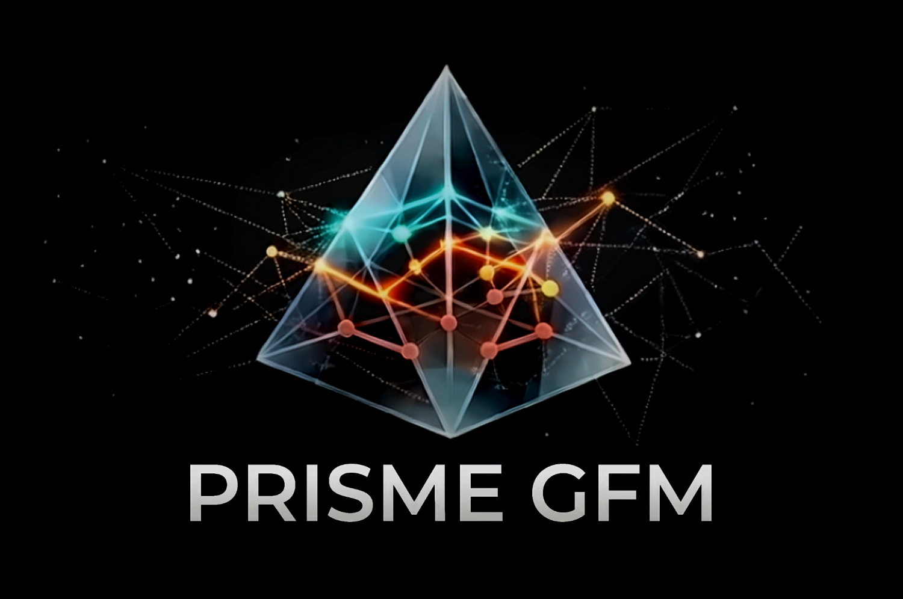
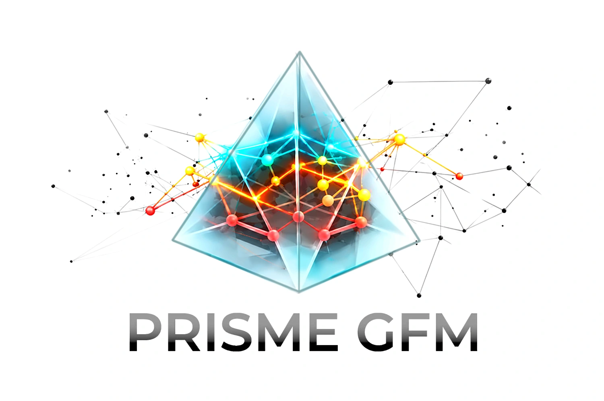

25 ans d'expérience · Montréal
La structure
de l'illisible
Plateformes, processus, données :
Prisme GFM accompagne les organisations dans leur transformation numérique, pour que leurs outils servent leur mission et que leurs données éclairent leurs décisions.

- Transformation numérique
- Architecture de données
- Interopérabilité
- Intelligence d'affaires
Pour qui
Vos outils ne suivent plus votre mission.
Mettre en commun ne fait pas perdre son modèle d'affaires. Ça l'élargit.
Réseaux culturels · OBNL · SDC · Institutions publiques · Industries · Recherche
- Vos plateformes ne répondent plus aux besoins de vos membres ou de vos clients.
- Vos données vivent dans plusieurs outils qui ne se parlent pas.
- Vous voulez intégrer l'IA sans savoir par où commencer.
- Vous dépendez d'un fournisseur ou d'une plateforme propriétaire.
- Vous devez expliquer ces enjeux à un CA, à un ministère, à vos membres.
Ce que ça change
Une transformation numérique qui tient ses promesses.
Moins de doubles saisies
Moins d'erreurs, du temps gagné pour vos équipes.
Des décisions sur des faits
Un portrait fiable plutôt que l'instinct.
Des migrations sans perte
Changer d'outil ou de fournisseur sans perdre vos données.
Être trouvé
Par le public, les moteurs de recherche et l'IA.
Des données prêtes pour l'IA
Structurées, documentées, exploitables.
Partager sans perdre le contrôle
Et dépendre moins d'un seul fournisseur.
Quatre offres
Optimiser. Diagnostiquer. Structurer. Transmettre.
Transformation numérique
Optimiser
Plateformes · Parcours utilisateur · Processus
- Parcours, espace membre, panier d'achat
- Feuille de route et fournisseurs
- Gestion de projet et du changement
Livrable : audit priorisé, effort et budget estimés
Architecture de données
Diagnostiquer
Écosystèmes numériques · Préparation à l'IA
- Mission et modèle d'affaires
- Données et préparation à l'IA
- Pistes d'architecture
Livrable : cartographie et feuille de route
Interopérabilité
Structurer
Ontologies · Data spaces · Mutualisation
- Mutualisation entre organisations
- Ontologies, découvrabilité, IA
- Data spaces en logiciel libre
Livrable : modèle, norme et plan de mise en commun
Intelligence d'affaires
Transmettre
Intelligence collective · pour ceux qui décident
- Conférences sectorielles et grand public
- Formations sur mesure
Sujets : data spaces sans jargon, mutualisation, découvrabilité, IA, souveraineté
Optimiser et Diagnostiquer : Prisme GFM conçoit et orchestre le réseau d'experts qui réalise.
Comment je travaille
Par phases, avec une décision à chaque étape.
01
Diagnostic
Entretiens, audit de l'existant, cartographie.
02
Conception
Architecture, priorités, feuille de route.
03
Réalisation
Experts mobilisés et gestion de projet.
04
Pérennisation
Transfert de compétences, suivi des résultats.
| Formule | Durée | Facturation |
|---|---|---|
| Appel découverte | 30 min | Gratuit |
| Diagnostic ciblé (un enjeu) | 1 à 2 sem. | Forfait |
| Diagnostic complet | 4 à 6 sem. | Forfait |
| Accompagnement | 1 à 3 j/sem. | À la journée |
| Suivi | Au besoin | Banque d'heures |
| Conférence ou atelier | ½ ou 1 jour | À la journée |
Je construis avec vos équipes, pas pour elles.
L'approche
L'innovation n'est pas dans l'outil, mais dans l'orchestration.
En couches, sans enfermement
Les bonnes licences, les logiciels libres quand ils existent, une lecture critique des fournisseurs.
Souveraineté
Savoir où vivent vos données et qui y a accès.
Une seule interlocutrice
Un réseau d'experts techniques, mobilisé au besoin.
Langage clair
La technique expliquée à ceux qui décident.
Réalisations
25 ans de transformation numérique, des plateformes à la donnée
Datascène × TMNlab
Liaison France–Québec sur l'interopérabilité avec le TMNlab et montage d'un MRSEI avec Performadata (ontologie des arts vivants).
Productions Étienne Drapeau
Catalogue structuré en JSON-LD selon Datascène, intégré à Métamusique, Volum et La Vitrine.
Normes nationales
Datascène et norme de métadonnées pour les expositions en contexte muséal, sur mandat du MCC.
La Vitrine
Le plus grand agrégateur de données de sorties culturelles : Datascène et Schema.org, plus d'une douzaine de sources.
Radio-Canada
À la base du projet qui allait devenir OHdio : segmentation, partage, droits musicaux.
CORPIQ et Sutton Québec
Kangalou et ProprioEnquête pour la CORPIQ : passerelles entre sites web et interopérabilité des données immobilières avec Centris.
La fondatrice
Geneviève Fabio
Formée en communication politique, Geneviève Fabio a choisi de travailler le contenant pour que le contenu porte : agences web, UX, SEO, puis API, bases de données et sémantique.
Chapitre du MOOC FUN sur la découvrabilité. Panéliste au TMNlab et à BAnQ. Membre du CA de Données Souveraines Québec.
« Elle porte une vision et elle y croit assez fort pour embarquer tout le monde avec elle. »Théo Dimeglio, tech lead, La Vitrine
« Elle comprend profondément les enjeux technologiques sans être développeuse. »Ivo Tzvetkov, directeur de la technologie, bbox.digital
Contact
Parlons-nous.
Un appel découverte de 30 minutes, sans frais, pour cerner votre enjeu et voir comment je peux vous aider.
Planifier un appel découverte
